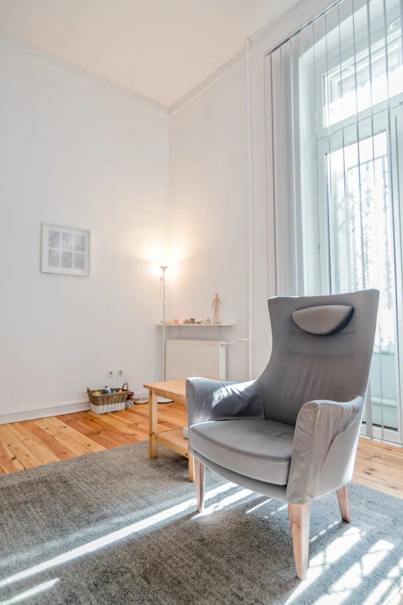
Psychoterapia indywidualna
Regularne spotkania, których kierunek wyznacza cel formułowany przez Panią lub Pana. Psychoterapia daje możliwość przyglądania się sobie i dostrzeżenia nowych możliwości.
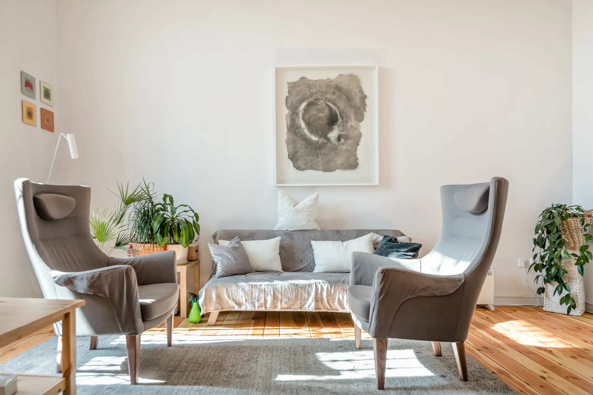
Gabinet psychoterapii Dorota Szykulska-Paprocka
Psychoterapia indywidualna, par i rodzinna oraz trening TRE w Łodzi. Pracuję z osobami dorosłymi w spokojnym gabinecie przy Kilińskiego 177.
Umów wizytę: 600 16 44 44Wizyty umawiam telefonicznie, pon.-pt. 8.00-20.00
Jestem psycholożką, psychoterapeutką i coachką. Od ponad dwudziestu pięciu lat pracuję z ludźmi, wspierając ich w wychodzeniu z psychologicznych pułapek.
Specjalizuję się w leczeniu chorób somatycznych o podłożu psychogennym (tzw. psychosomatycznych) oraz zaburzeń nerwicowych, depresyjnych i lękowych. Pomagam osobom, które zmagają się z zaniżonym poczuciem własnej wartości, problemami emocjonalnymi i trudnościami w relacjach - w związku i w pracy.
Pracuję w nurcie ericksonowskim. Zależy mi na pragmatyzmie i indywidualnym podejściu do każdej osoby: do jej zasobów, doświadczeń i tego, z czym przychodzi.
Często u podstaw obecnych trudności leżą dawne, bolesne doświadczenia, które domagają się wypowiedzenia i zrozumienia. To delikatny proces, który wymaga czasu i relacji opartej na zaufaniu.

Regularne spotkania, których kierunek wyznacza cel formułowany przez Panią lub Pana. Psychoterapia daje możliwość przyglądania się sobie i dostrzeżenia nowych możliwości.
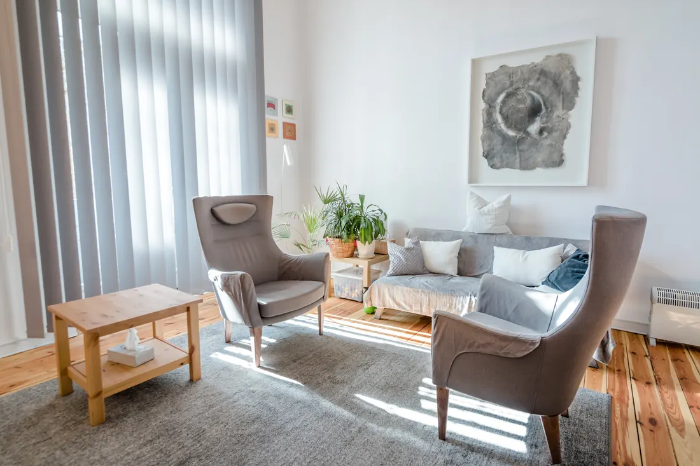
Gdy trudność dotyczy związku: kryzys, konflikty, zdrada, nowa sytuacja życiowa. Spotkania z obojgiem partnerów, zwykle co dwa tygodnie, ok. 50 minut.
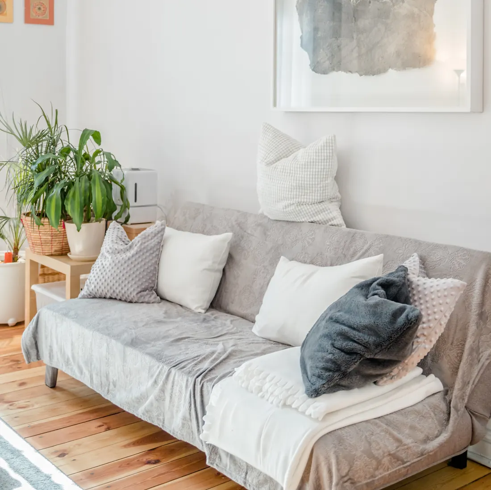
Spotkania całej rodziny, gdy dzieci lub młodzież przeżywają trudności albo rodzina przechodzi kryzys: rozstanie, śmierć bliskiej osoby, nowy etap życia.
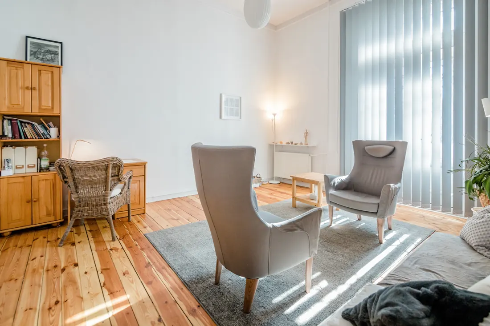
Ćwiczenia uwalniające z ciała napięcie mięśniowe (Tension and Trauma Releasing Exercises). Kilka sesji wystarcza, by nauczyć się ich i stosować samodzielnie.
Autentyczny kontakt, zrozumienie i akceptacja to baza terapii.
W pracy kieruję się kodeksem etycznym Polskiego Towarzystwa Psychiatrycznego i Polskiego Towarzystwa Psychologicznego.
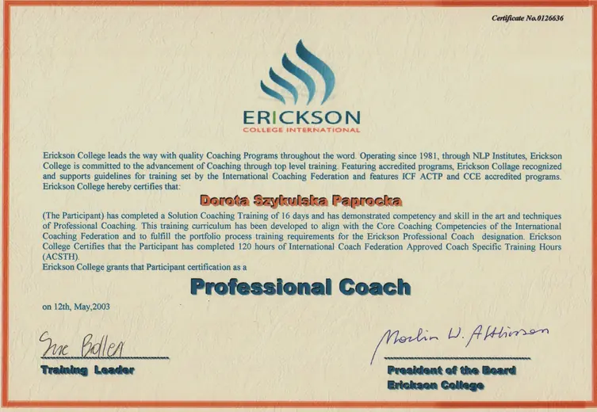
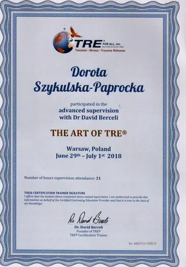
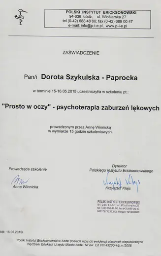
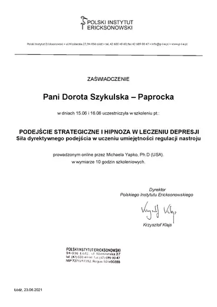
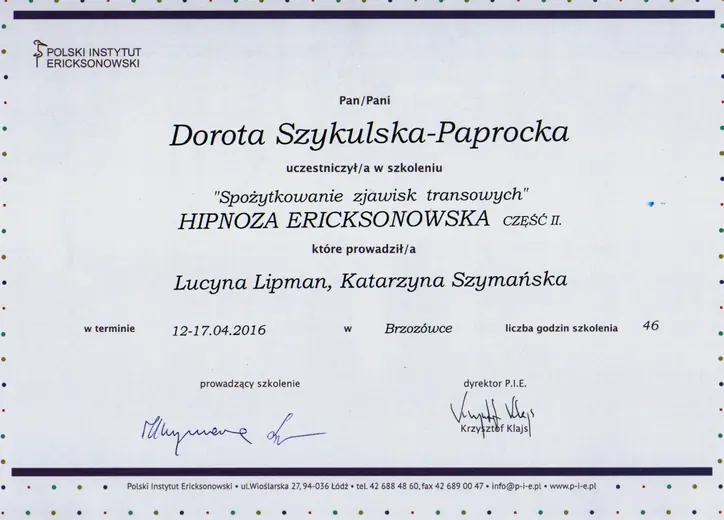
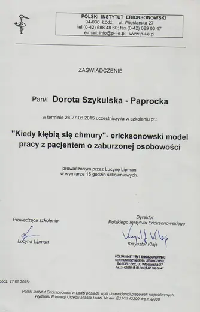
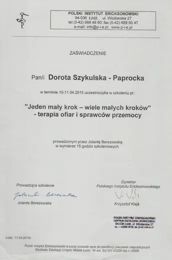
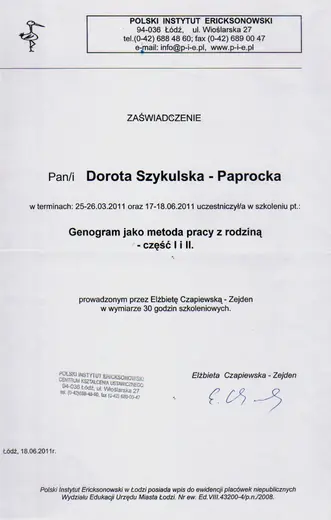
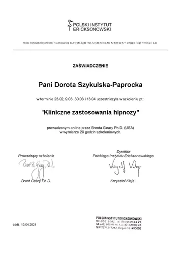
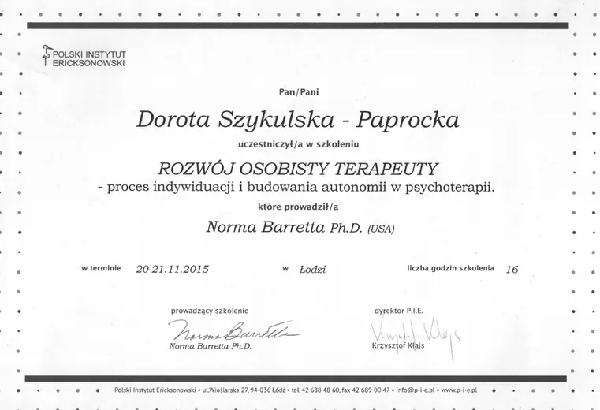
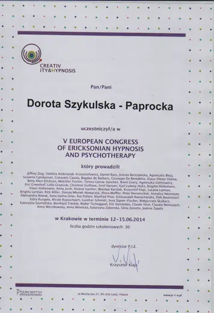
Pierwsze piętro, na domofonie: „psychoterapia”.
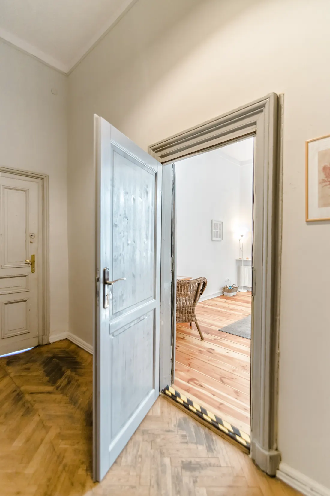
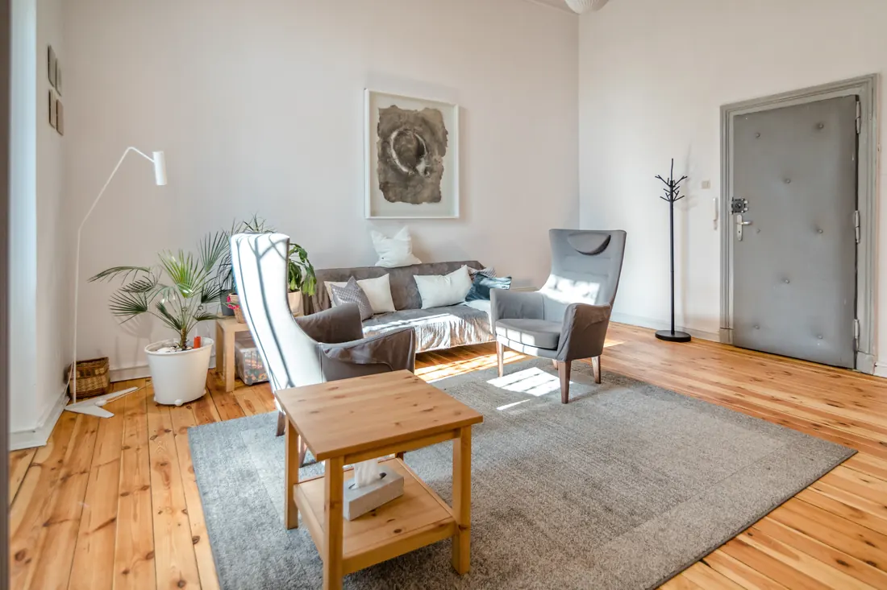
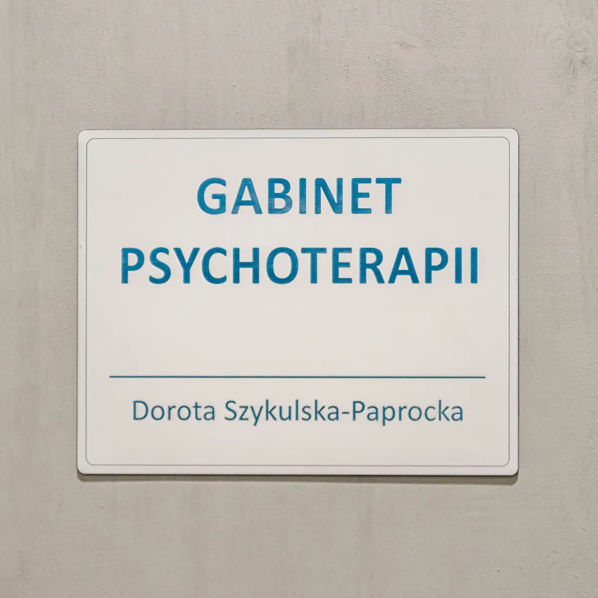
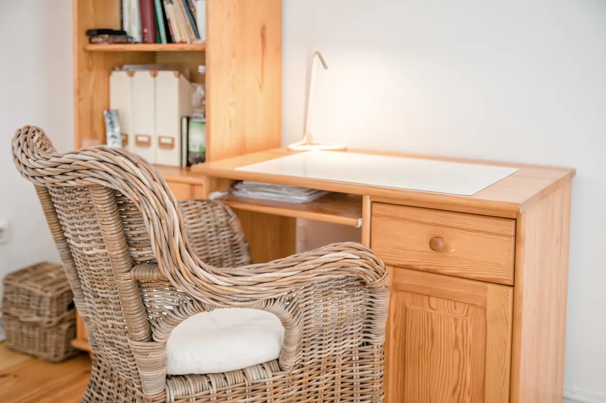
Wizyty umawiam telefonicznie od poniedziałku do piątku w godzinach 8.00-20.00.
600 16 44 44